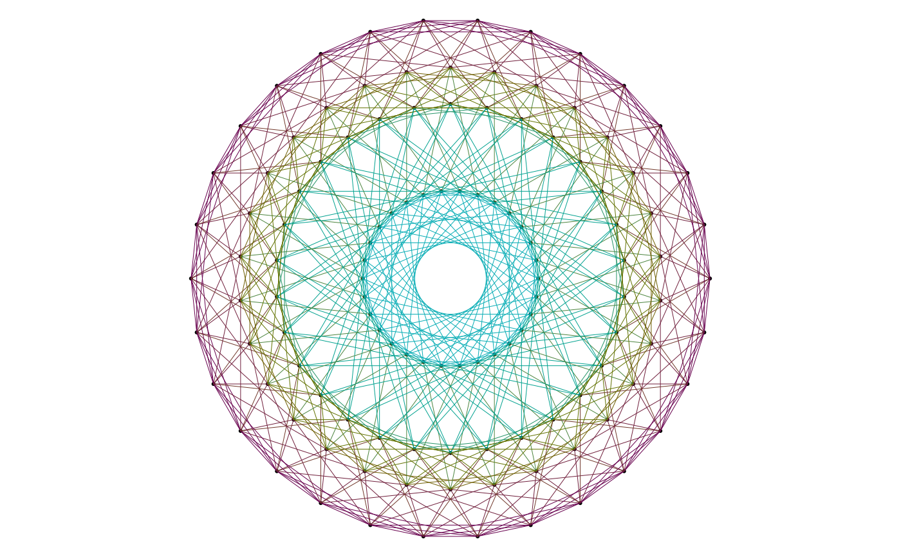

Computes the vertices and the edges of the convex hull of a set of points.
Value
A list with two fields: vertices and edges. The
vertices field is a list which provides an id for each vertex and
its coordinates. If adjacencies=TRUE, it provides in addition the
ids of the adjacent vertices for each vertex. The edges fields is
an integer matrix with two columns. Each row provides the two ids of the
vertices of the corresponding edge.
Examples
library(cxhull)
# let's try with the hexacosichoron (see `?hexacosichoron`)
# it is convex so its convex hull is itself
VE <- cxhullEdges(hexacosichoron)
edges <- VE[["edges"]]
random_edge <- edges[sample.int(720L, 1L), ]
A <- hexacosichoron[random_edge[1L], ]
B <- hexacosichoron[random_edge[2L], ]
sqrt(c(crossprod(A - B))) # this is 2/phi
#> [1] 1.236068
# Now let's project the polytope to the H4 Coxeter plane
phi <- (1 + sqrt(5)) / 2
u1 <- c(
0,
2*phi*sin(pi/30),
0,
1
)
u2 <- c(
2*phi*sin(pi/15),
0,
2*sin(2*pi/15),
0
)
u1 <- u1 / sqrt(c(crossprod(u1)))
u2 <- u2 / sqrt(c(crossprod(u2)))
# projections to the Coxeter plane
proj <- function(v){
c(c(crossprod(v, u1)), c(crossprod(v, u2)))
}
points <- t(apply(hexacosichoron, 1L, proj))
# we will assign a color to each edge
# according to the norms of its two vertices
norms2 <- round(apply(points, 1L, crossprod), 1L)
( tbl <- table(norms2) )
#> norms2
#> 0.4 1.6 2.4 3.6
#> 30 30 30 30
#> 0.4 1.6 2.4 3.6
#> 30 30 30 30
values <- as.numeric(names(tbl))
grd <- as.matrix(expand.grid(values, values))
grd <- grd[grd[, 1L] <= grd[, 2L], ]
pairs <- apply(grd, 1L, paste0, collapse = "-")
colors <- hcl.colors(nrow(grd), palette = "Hawaii", rev = TRUE)
if(require("colorspace")) {
colors <- colorspace::darken(colors, amount = 0.3)
}
#> Loading required package: colorspace
names(colors) <- pairs
# plot ####
opar <- par(mar = c(0, 0, 0, 0))
plot(
points[!duplicated(points), ], pch = 19, cex = 0.3, asp = 1,
axes = FALSE, xlab = NA, ylab = NA
)
for(i in 1L:nrow(edges)){
twopoints <- points[edges[i, ], ]
nrms2 <- round(sort(apply(twopoints, 1L, crossprod)), 1L)
pair <- paste0(nrms2, collapse = "-")
lines(twopoints, lwd = 0.5, col = colors[pair])
}

par(opar)